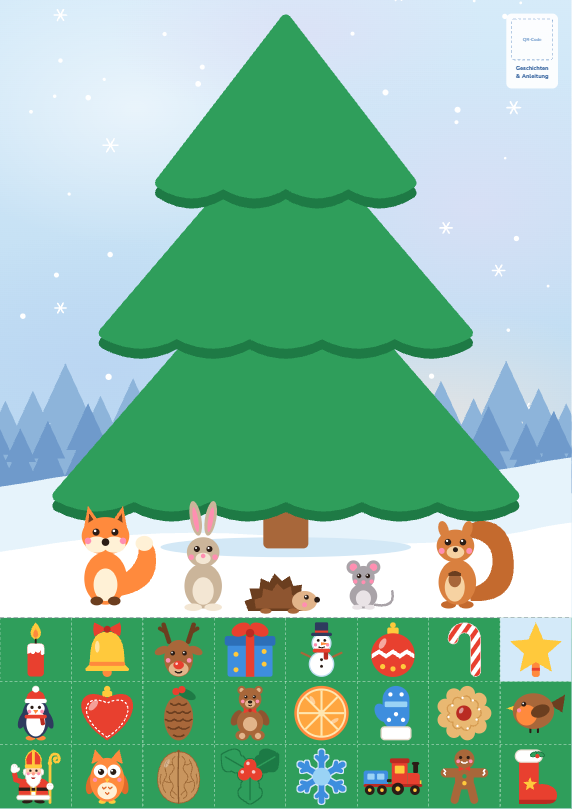

So geht's
- 1
Plakat aufhängen
Hängt das Plakat mit dem Baum gut erreichbar auf.

- 2
Geschichte vorlesen
Öffnet jeden Tag im Kalender das Türchen des Tages und lest die Geschichte vor.
- 3
Motiv aufkleben
Unter jeder Geschichte seht ihr ein Motiv, das unten auf dem Plakat ist. Schneidet es aus und klebt es auf den Baum.
Tipp: Als App ablegen
iPhone: In Safari unten auf Teilen tippen, dann „Zum Home-Bildschirm“.
Android / Computer: Im Browser-Menü (meist ⋮ oder ≡) auf „Installieren“, „App installieren“ oder „Zum Startbildschirm hinzufügen“ tippen – der Name ist je nach Browser etwas anders.
Tipp: Andere Sprache? Other language?
Nutzt die Übersetzen-Funktion eures Browsers – auf dem Handy meist im Menü unter „Übersetzen“.
Use your browser’s translate function – on phones usually in the menu under “Translate”.